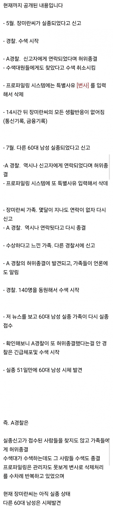
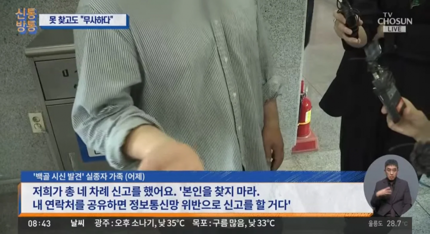

자기가 수색하는 것도 아니지만 귀찮으니 사건 종결시킴
수색대한테 일부러 찾지 말라고 말해야하는 귀찮음이 있지만 어쨌든 귀찮아서 사건 종결시킴
관리자도 못 보는 방식을 굳이굳이 일부러 찾아내서 변사처리했지만 어쨌든 귀찮아서 사건 종결시킴

이렇게 하면 피해자들이 수시로 연락하고 찾아달라고 귀찮게 구는데도
어쨌든 귀찮아서 사건 종결시킨 거임
도보 10분거리, 1km도 안 되는 곳에 무려 3개월동안 무더운 여름 날씨에 시체가 방치되고 있기에
추가로 사람들의 신고나 시신발견이 우려되는 상황이었지만
그 리스크를 감수하고서라도 귀찮음은 해소해야되는 중요한 감정임
귀찮다는 이유로 이 모든 귀찮음을 다 감수해야하지만,
어쨌든 귀찮아서 사건을 축소한 것이고, 개인의 일탈에 불과함
절대 절대로 뒤에 어떤 음모가 있다거나 인신매매를 한다거나 하는 허위사실을 유포해서는 안 됨.
댓글
수집 당시 댓글 36개
도널드트럼프주니어 · 1 시간 전
그럼 니가 해ㅋㅋ
뭐니 · 1 시간 전
그거 생각나네 사장 몰래 배달앱 정지시켜놓고 꿀빨던 알바 ㅋㅋㅋ
IllIIllIlI · 1 시간 전
앞으로 더 씹창날거임 ㅋㅋㅋㅋㅋ 형사사건의 무료 변호사나 다름 없는 검찰이 사라지니 ㅋㅋㅋㅋㅋㅋ
굴대남 · 1 시간 전
몇년전 뉴스보니까 제주도 모 경찰서 교통경찰도 저런식으로 자체종결시켰다가 걸렸는데...;;
kdi253kd · 1 시간 전
경찰은 못찾으면 담당자가 퇴근 못하는 경우도 많아서 단순히 다른수색대가 있지만~ 은 틀린말임 근데 디테일한건 조사해봐야 알겠지
sjw3ur · 1 시간 전
이 사건과는 별개 이야기지만, 일본에서도 간호사가 노인 환자들의 링거에 이물질을 주입해 연쇄적으로 살해한 사건이 있었다. 확인된 피해자만 수십 명에 달했고, 밝혀지지 않은 피해자도 더 있을 것으로 추정됐다. 더 충격적인 건 범행 동기였는데, 환자가 자기 근무 시간에 사망하면 유족들을 직접 상대해야 하는 게 부담스러워서 일부러 자기 근무 시간을 피해 죽도록 했다는 것이었다. 세상에는 정말 생각보다 별것 아닌 이유로 사람을 죽이는 사이코패스들이 많다.
으흥아흥 · 1 시간 전
단순 개인 일탈인지 저런 짓을 암암리에 하던게 제주경찰 분위기인지가 중요해보임
클로티드크림과스콘 · 1 시간 전
일 개판치는 원인 중 하나로 "태업", "태만"은 생각보다 인류 전체 역사에서 상당히 흔하게 보이고 또 개인 입장에서는 합리적이기까지 한 동기임. 오히려 개인의 행위에 어떤 숨은 이유를 찾겠다는 식의 접근이야말로 위험할 수 있음.
dandelion · 1 시간 전
태업인지 다른 이유인지 어케 판단함
클로티드크림과스콘 · 1 시간 전
그건 이제 조사와 수사를 통해 밝혀질 문제인 것이고 "그 리스크를 감수하고서라도 귀찮음은 해소해야되는 중요한 감정임. 귀찮다는 이유로 이 모든 귀찮음을 다 감수해야하지만, 어쨌든 귀찮아서 사건을 축소한 것이고, 개인의 일탈에 불과함. 절대 절대로 뒤에 어떤 음모가 있다거나 인신매매를 한다거나 하는 허위사실을 유포해서는 안 됨." 본문 글이 이런 내용이니 댓글로 지적을 한 거지.
powerdry · 1 시간 전
그냥 태업이 아니라, 조금만 생각해봐도 뒷감당 안되는 걸 저렇게 삭제처리하는건 말이 안됨. 본문 읽은거 맞음? 허위종결했어. 근데 다른 사람이 시신을 발견했어. 그럼 수사가 개시되면서 실종타임라인이 작성되겠지? 유가족들이 분명 실종 신고를 했다고 말할텐데 그러면 허위 종결한거도 들키겠지? 그럴 확률이 상당히 크지 않을까? 꼭 시체로 발견되는게 아니어도, 실종신고가 들어갔다는거 자체가 어떤 범죄와 연관되었을 확률이 매우 높은데, 나중에 범인이 잡히면 또 마찬가지임. 귀찮다고 저런 짓을 하기엔, 나중에 자기가 모든책임을 다 뒤집어써버리는, 그냥 대충 주먹구구 계산해도 높은 확률로 감당할 수 없는 손해가 발생하는 행위임 태만 하려는 사람도 원숭이가 아닌 이상 자기한테 후에 귀찮은 일이 없도록 행동하지 특히 공무원 조직에서 일반적으로 게으르기만 한 사람이 저럴 동기는 전혀 없다 물론 저 경찰이 공무원시험을 통과 했음에도 불구하고 이상한 개폐급일수도 있겠지 근데 저 위의 모든 가능성을 '배제'하고 또 추가적인 의심을 '종결'해야 한다는거임?
클로티드크림과스콘 · 1 시간 전
"내"가 가능성을 배제하고 의심을 종결하고 있는 게 아닐텐데?
콩냉이순장고 · 1 시간 전
현 시스템 하에서 일개 공무원 하나가 이렇게까지 할수 있다는게 너무 무섭다.
철모 · 1 시간 전
ㄹㅇ 일이 귀찮아서 어쩌고까지는 뭐 그렇다치고 시스템에서 사람을 변사로 처리하는 과정을, 한 사람 손에서 처리되고 묻힌다는게
가을야구정기예금 · 39 분 전
일개 공무원이라고는 하지만 모든 일이 실무자를 신뢰하지 않으면 복잡해지고 느려질거임 사회는 개개인이 자신의 업무에 신의성실을 다할것이라는 신뢰 위에 구성된것이니깐
그러기로마음먹음 · 1 시간 전
글쓴 개붕이가 "개인의 일탈이다", "귀찮아서 그런거다" 이렇게 단정지어서는 안된다고 본다. 조사를 해봐야 아는 일인데 니가 뭐라고 개인의 일탈이라고 확신하냐
하라쇼 · 1 시간 전
글 자체는 개인 일탈이 아니라고 꼰거잖아...
그러기로마음먹음 · 1 시간 전
내가 눈치가 없었네...
클로티드크림과스콘 · 1 시간 전
반대야. 비꼬는 거잖아.
그러기로마음먹음 · 1 시간 전
아... 꼰거야? 미안하다. 난 꼰거라고 못 느껴서...
로맨틱터미네이터 · 1 시간 전
독자연구인데 개드립이 말이됨?
일본시골왜노자 · 1 시간 전
검찰해체로 권력 이양하기전에 한번 조직 털어봐야지. 자격이 없으면 많이들 옷 벗어야할거
우리부모님은 · 1 시간 전
1년 반동안 실종신고 받은다음 단독으로 실종자 찾았다고 종결처리한게 300건 가까이 된다는데 이 사람들 아직도 실종상태겠지요? ㅋㅋㅋ 귀찮아서인지, 뭐 다른 이유가 있어서인지는 조사결과가 나와봐야아는건데 ~~하지만 아무튼 귀찮아서 종결이라며 비꼬고 있네 ㅋㅋㅋ
죠스타 · 1 시간 전
나라 꼬라지ㅋㅋ
행복은불행의소거 · 1 시간 전
변사종결처리를 맘대로 할 수 있다는게 신기하네. 옛날엔 변사종결도 이거저거 절차필요헸능데 ㅈ됏구먼
부르기어려운닉네임 · 1 시간 전
나라 씨발 꼬라지
HUoAK · 1 시간 전
뭐 귀찮아서인지 아닌지는 모르겠지만 이 글 자체가 병신같은건 확실하네
이제그만해힘들어 · 1 시간 전
내 생각도 같음 이제는 시스템을 바꿔야지 쓸데 없는 음모론으로 가면 안됨
빈센트반호구 · 41 분 전
이제 시스템을 더 많은 경찰 권한강화와 견제약화쪽으로 바꿨으니 음모론이 더 판을 치고 실제 억울한일도 판을 치겠지
cm만더크고싶다 · 1 시간 전
진짜 귀찮아서면 ㄹㅇ 사이코패스나 소시오패스 아니냐
Eastside · 1 시간 전
허위사실 유포도 병신같은건 맞는데 이제 조사하는 사건을 지가 뭐가 된마냥 왜 확답을 내림 ㅋㅋ
개의레시피 · 59 분 전
경찰이 현장에 나가도 빤스런하는 시대에 생각해보니 딸깍으로 하는 사무직은 얼마나 가라치는게 많을까 개인의 문제가 반복되면 집단의 문제인거지
엄복동 · 58 분 전
리스크에 비해서 얻는게 너무 적은데 왜 그랬을까?;;
삼다수3 · 55 분 전
지능이 낮을수록 소탐대실을 잘함
접신하는피카츄 · 47 분 전
같은경찰들도 이해가 안간다는 사건.... 진짜 점마 뭐지? 이런생각밖에 안듬
대머리금지법 · 41 분 전
저 경찰은 이정도 일 저질러 놓고 본인은 아직까지 경찰로 먹고살수있을거라고 생각할까?